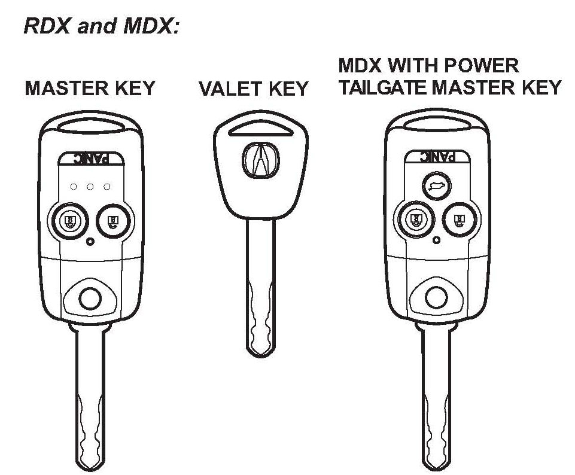
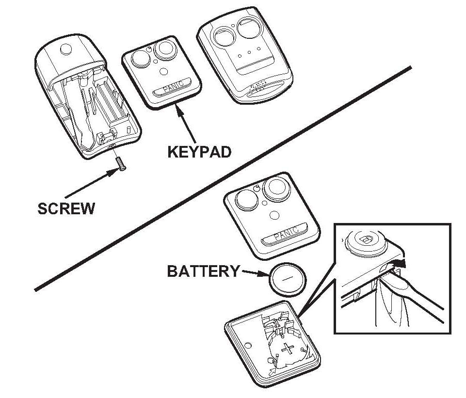
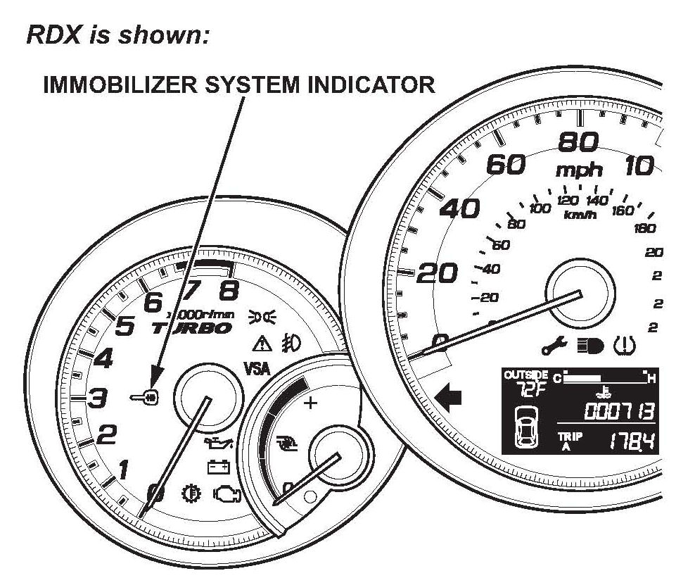
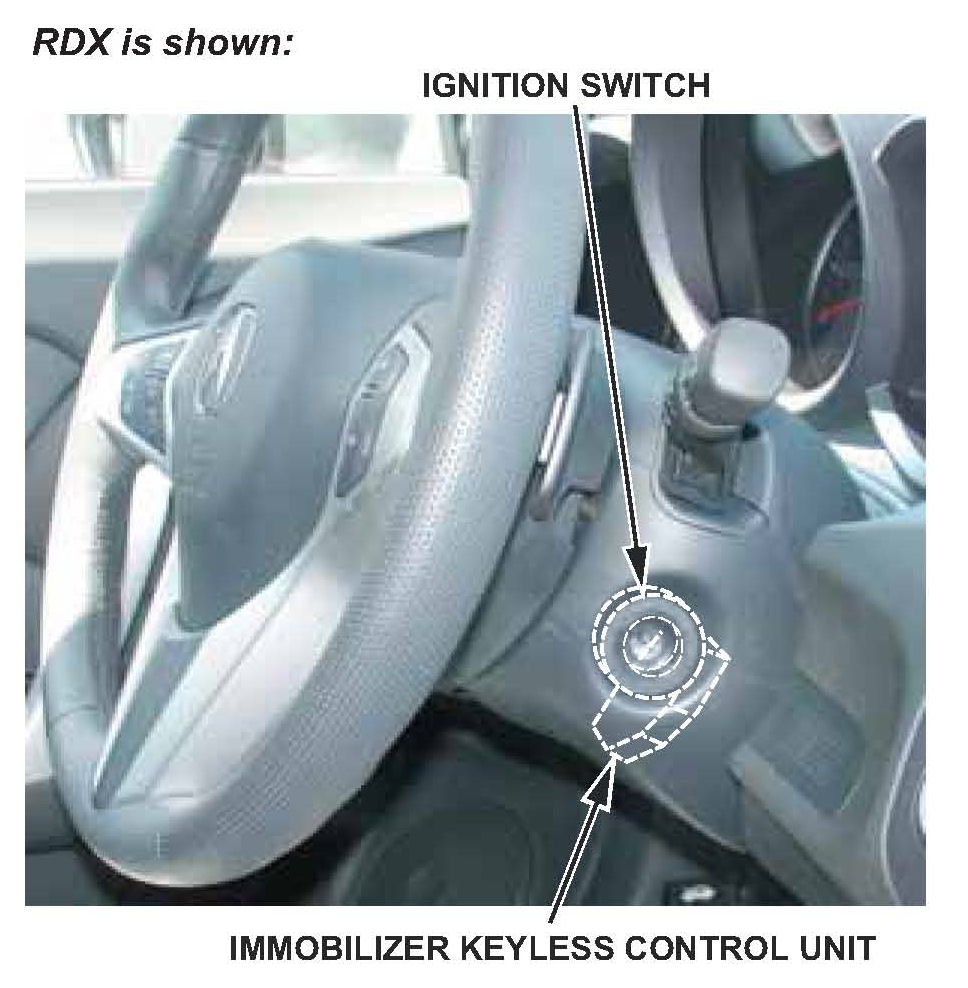

Antitheft - Immobilizer System (Type 6) Information: Overview
06-033February 22, 2013
Applies To:
2007 - 09 MDX - ALL 2007-12 RDX-ALL
Immobilizer System (Type 6)
(Supersedes 06-033, dated February 20, 2009; see REVISION SUMMARY)
REVISION SUMMARY
This service bulletin has been revised extensively. American Honda recommends that you review the entire bulletin.
BACKGROUND
All 2007-09 MDXs and 2007-12 RDXs have a Type 6 GEN4 immobilizer system that disables the vehicle unless a programmed ignition key is used. The transponder in the key or keyless transmitter uses a rolling-type code instead of a set code.
In this service bulletin, a programmed ignition key refers to a transponder-type key that has been cut to fit the ignition switch and whose transponder ID code is recognized by the immobilizer system. If you try to start the engine without a programmed ignition key, the engine cranks, but won't start, or it starts and runs for one second and stalls.
This service bulletin covers:
^ Immobilizer system components
^ Immobilizer transponder keys and keyless transmitter descriptions
^ System description
^ Adding and deleting keys or keyless transmitters
^ Replacing the immobilizer-keyless control unit
^ Replacing the PCM
^ Replacing the under-dash fuse/relay box (MICU)
^ Starting the engine without a programmed ignition key
^ Troubleshooting the immobilizer system
For more information on the immobilizer system, refer to the Body Electrical section of the appropriate service manual.
WARRANTY CLAIM INFORMATION
None. This service bulletin is for information only.
IMMOBILIZER SYSTEM COMPONENTS
NOTE:
When programming one or more of the immobilizer system components, the HDS may display This function is locked. This requires you to get a release password from the iN (Interactive Network) to continue. To get the release password, you need the attempt count recorded in the HDS.
The immobilizer system includes:
^ Immobilizer transponder keys
^ Immobilizer system indicator
^ Immobilizer-keyless control unit
^ PCM
^ Under-dash fuse/relay box (MICU) with built-in IMOES unit and 1-wire B-CAN communication
IMMOBILIZER TRANSPONDER KEYS AND
KEYLESS TRANSMITTER DESCRIPTIONS

Each vehicle comes with three immobilizer transponder keys (two master keys and one valet key).
Each master key and valet key has a transponder that outputs a rolling-type code (activated by the immobilizer-keyless control unit) when you insert the key into the ignition switch and turn the switch to ON (II). The immobilizer system uses this code to determine whether to start the engine.
When you need to cut a new or duplicate key, use the appropriate tool from the Honda Tool and Equipment Program. Call or on the Interactive Network (iN), click on Service > Quick Links > Tool and Equipment Program.
Because of the rolling code characteristics of the Type 6 immobilizer system, you cannot use the Ilco Immobilizer Key Code Duplicator or Ilco programmable (T5) key blanks with this system.

The immobilizer transponder does not contain batteries or other serviceable parts. The master keys have a battery-operated remote transmitter built into the grip for the keyless functions.
SYSTEM DESCRIPTION
Immobilizer Indicator

The immobilizer indicator is on the instrument panel. When you insert a programmed ignition key (master or valet) into the ignition switch and turn the switch to ON (II), the indicator flashes and then goes off. At this point, the engine can be started by turning the ignition switch to START (III). Unlike previous systems, the indicator does not come on when you turn the ignition switch to LOCK (0).
If you insert a nonprogrammed ignition key into the ignition switch and turn the switch to ON (II), the indicator flashes until the switch is turned to LOCK (0). The immobilizer system results vary, depending on how quickly you turn the key.
^ If you turn the ignition switch quickly from LOCK (0) to START (III), the engine will start and run for about 1 second, then shut off.
^ If you turn the ignition switch to ON (II), then pause before turning to START (III), the starter will crank the engine, but it will not start.
Unlike the previous system, when a nonprogrammed key is used and the ignition switch is returned to LOCK (0), the indicator flashes 10 times to indicate the system has reset.
Immobilizer-Keyless Control Unit

The immobilizer-keyless control unit is inside the bezel around the steering column. It uses electromagnetic induction to energize the electronic transponder in the key. There is no direct electrical connection. Once the transponder is energized, the key sends its ID code to the immobilizer-keyless control unit, which checks the code against the codes stored in its memory. If the ID code matches, the control unit sends a unique serial code to the PCM, and the engine starts. If the ID code does not match, no serial code is sent, and the engine does not start.
Powertrain Control Module (PCM)
The PCM is an integral part of the immobilizer system. When the PCM receives the unique serial code from the immobilizer-keyless control unit, it communicates or handshakes" with the immobilizer-keyless control unit by sending back its own unique serial code. If the serial codes are mutually recognized, the PCM energizes the fuel supply system and the ignition system so the engine can start.

Disclaimer